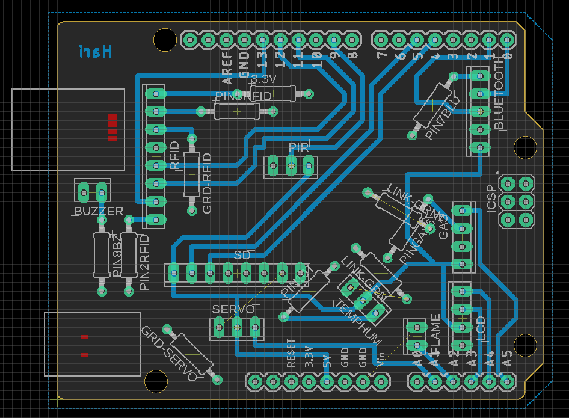

Multi-sensor monitoring
Two separate builds: an Arduino home monitor on a custom PCB, and a monitoring system on a Cyclone V SoC.

Arduino home monitor
An Arduino Uno shield on a single-layer PCB designed in EAGLE. It connected RFID access, temperature, humidity and gas sensors, a servo, a buzzer, and voice playback.
Two problems showed up once the board was fabricated. Parts of the ground plane were broken, so I bridged them with jumper wires. Some connectors were also routed to the wrong pins: the LCD was wired to A3 and A4, but the Uno’s I²C lines are A4 and A5. I rewired those connections by hand.

Cyclone V monitor
A monitoring system on the Cyclone V SoC’s ARM Cortex-A9, using GPIO, timers, and interrupts, with a finite-state machine handling sensor events. The design called for a PIR sensor, an LCD, and a speaker. In the prototype we demonstrated, the board’s switches, buttons, LEDs, and seven-segment displays stood in for them.
Across the two builds I worked with SPI and I²C peripherals and with both interrupt-driven and polled I/O.